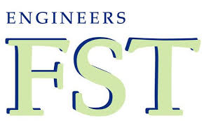
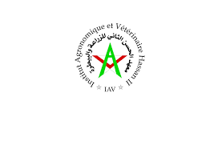
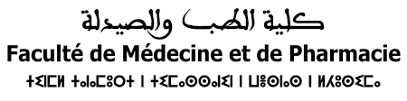
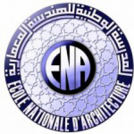

Ecole Nationale Supérieure des Arts et Métiers
Une fois pré-selectionnés d’après la moyenne générale du baccalauréat et par ordre de mérite, les candidats doivent se présenter pour passez un concours écrit qui pourra déterminer leur admission à l’ENSAM de leur choix. La sélection se fait aussi selon la proximité géographique.

Facultés Sciences et Techniques
Les facultés des sciences et techniques FST sont des facultés de formation techno-scientifique, les FST au Maroc sont au nombre de sept. Les facultés des sciences et techniques FST offrent une formation mélangée entre ce qui est technique et scientifique. La spécificité c’est que ces établissements sont effectivement des facultés, mais à un aspect d’école supérieure.

l’Année Préparatoire aux Etudes Supérieures en Agriculture (APESA)
L’accès à l’APESA est réservé aux bacheliers des filières scientifiques (Physique-Chimie, Sciences de la vie et la terre, Sciences mathématiques A, Sciences mathématiques B, Sciences agronomiques et Baccalauréat type S du système français).
Les candidats doivent être titulaires d’un baccalauréat scientifique de l’année en cours et être âgés de moins de 23 ans au 1er septembre de l’année de l’inscription.
Ecole Nationale Supérieure du commerce et gestion
Le concours ENCG est le même partout quelque soit la ville. Administrativement parlant, il s’appelle le TAFEM pour Test d’Aptitude à la Formation En Management. Il s’agit d’une épreuve avec plusieurs parties : mémorisation, culture générale, problèmes mathématiques variés …

Facultés de Médecine et de Pharmacie FMP
Les facultés de médecine et de pharmacie organisent chaque année un concours d’accès à la première année après la sortie des résultats de la deuxième session du baccalauréat.
Contenu du concours FMP: Sciences de Vie et de Terre : 30 minutes, physique : 30 minutes, chimie : 30 minutes, mathématiques : 30 minutes.
Les coefficients de ces matières est 1 et ils sont notés de 0 à 20, pas de note éliminatoire.
Institut Supérieur de Commerce et Administration Entreprises ISCAE
Pour pouvoir participer au concours de l’ISCAE, il faut avoir 22 ans au plus et disposer d’un bac+2 ; soit via la faculté sous la forme d’un DEUG ou d’un DUT, soit via le réseau ENCG ou encore les classes préparatoires, BTS et SUT. En outre, il faut avoir deux mentions (supérieures à 12) durant les trois semestres postulés, sauf pour les étudiants des écoles préparatoires qui sont admis d’office à passer le concours. Au niveau de la présélection, des quotas sont fixés : deux tiers des candidats de l’ENCG, deux dixièmes des étudiants des écoles privées et un dixième pour chacun des postulants des écoles préparatoires et de la faculté.
Faculté de Médecine Dentaire FMD
L’accès en première année des études de Médecine Dentaire est ouvert aux candidats titulaires du Baccalauréat série Sciences expérimentales, Sciences mathématiques, Sciences agronomiques ou équivalent

Ecole Nationale d'Architecture E N A
l’Ecole Nationale d’Architecture est spécialisée dans la formation d’ingénieurs architectes, cette école est sous la tutelle du ministère de l’habitat de l’urbanisme et de la politique de la ville.
Trois écoles ont été créés pour en constituer désormais un réseau d’écoles d’architecture marocaines, il s’agit des ENA Rabat, Fès, Tétouan et Marrakech.
l’Institut Supérieur International du Tourisme Tanger (ISIT Tanger)
l’Institut Supérieur International du Tourisme Tanger (ISIT Tanger) a été créée en 1972, dont le but est de former des cadres opérationnels capables de concevoir, d’organiser, d’animer et de commercialiser des prestations touristiques.
Ecole Nationale d'Agriculture de Meknès ENAM
Créée en 1942, L’Ecole Nationale d’Agriculture (ENAM Meknès) est un établissement public spécialisé dans la formation d’ingénieurs agronomes.
Admission à la 1ère année : L’accès en 1 ère année se fait par sélection sur dossier suivie d’un test. Pour les nationaux âgés de moins 23 ans et titulaire du Baccalauréat sciences expérimentales, sciences mathématiques ou sciences agronomiques. Pour les étrangers, l’admission se fait sur étude de dossier.
Institut National des Postes et Télécommunications Rabat INPT
L’institut National des Postes et Télécommunications (INPT) est un établissement d’enseignement supérieur, rattaché à l’Agence Nationale de Réglementation des Télécommunications (ANRT)
Filières ouvertes au choix aux : Candidats ayant réussi le concours commun des écoles d’ingénieurs (filières MP, PSI et TSI) et Etudiants titulaires de DEUG, DEUST ou DEUP en SM, SMI, SMA, SMP ou MIP, sur concours.